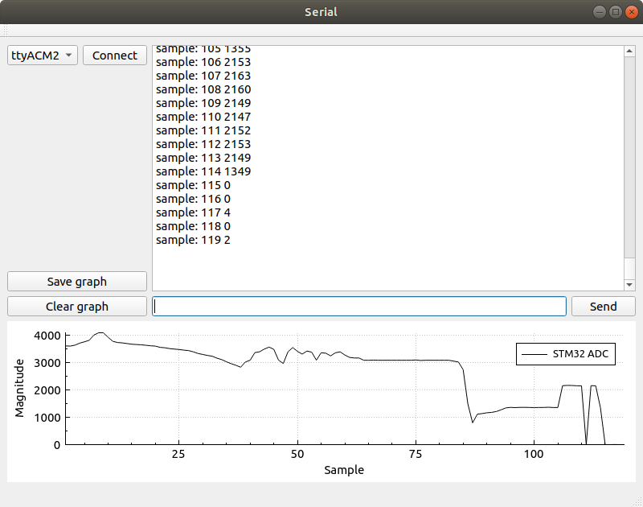
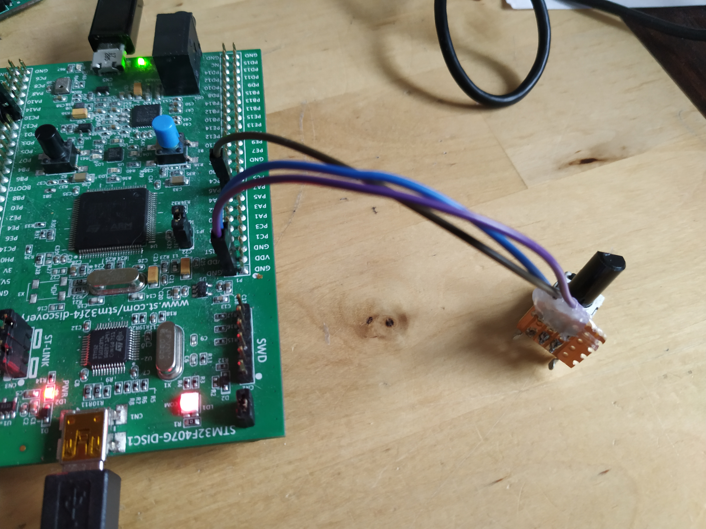

Here we implement an extension to the serial GUI developed in a previous blog post. The extension adds automatic data collection and plotting.
Being able to collect and plot data quickly and easily, and in a way that interfaces nicely with the experimental setup you are using is always nice. QCustomPlot creates nice looking plots and allows you to save plots in a multitude of different formats. This means that if you are already making a Qt GUI for your experimental platform, adding plots is a small cost with a lot of added value.
The example data that I collect in this post will come from an STM32F4-Discovery board with a potentiometer attached to one of its ADC (Analog to Digital Converter) pins. The STM32F4 program will generate 120 samples taken about half a second apart that will be plotted in the GUI using QCustomPlot. Each time that the STM32 is grabbing a sample it outputs a string containing "sample:" followed by sample number (sequence number) and the value obtained by the ADC for that sample point. For example "sample: 45 2048". This is the pattern that the automatic data collector will look for and parse. Of course this can be extended with more tags such as "sample:" if you want to collect many different sets of data at once. Maybe you want to collect for example "time:", "accuracy:" or "position:" samples for your particular use case.
The extended GUI that is developed in this text will look like the picture below:

As in the earlier post, the GUI itself (The placement of buttons and so on) is done using the GUI Designer within Qt Creator. The new elements of this GUI is, of course, the graph along the bottom of the window. This graph is added in the GUI Designer as a Widget that is then Promoted to a QCustomPlot. The other new elements are the Save graph and Clear Graph buttons.
QCustomPlot requires that you add printsupport, this is done in the .pro file for your Qt project as shown below.
QT += core gui serialport printsupport
Most of the code is identical to the previous post so this text will focus on the differences. What we will look at is:
This extension is not a whole lot of code, so all of it is still implemented entirely within mainwindow.h and mainwindow.cpp.
Let's take a look at the additions to mainwindow.h first.
#include "qcustomplot.h"
Include the qcustomplot.h file. QCustomPlot (at least the version I have) comes as just two files, qcustomplot.h and qcustomplot.cpp, just add these two files to the project.
The state held by the MainWindow object is augmented with an mData member where we accumulate the data collected.
private:
Ui::MainWindow *ui;
QSerialPort *mSerial;
QList<QSerialPortInfo> mSerialPorts;
QTimer *mSerialScanTimer;
QSharedPointer<QCPGraphDataContainer> mData;
void updateSerialPorts();mData is a QSharedPointer to a QCPGraphDataContainer. The QCPGraphDataContainer is an abstract data container of QCPGraphData object, one of which will be created for each data point that we parse.
There seems to be two ways to add data to a QCustomPlot graph, either you use data stored in a QVector
That covers the changes to the header file. Below you can find the complete code listing for mainwindow.h.
#ifndef MAINWINDOW_H
#define MAINWINDOW_H
#include <QMainWindow>
#include <QSerialPort>
#include <QSerialPortInfo>
#include <QTimer>
#include "qcustomplot.h"
QT_BEGIN_NAMESPACE
namespace Ui { class MainWindow; }
QT_END_NAMESPACE
class MainWindow : public QMainWindow
{
Q_OBJECT
public:
MainWindow(QWidget *parent = nullptr);
~MainWindow();
private slots:
void on_connectPushButton_clicked();
void on_sendPushButton_clicked();
void serialReadyRead();
void on_clearGraphPushButton_clicked();
void on_saveGraphPushButton_clicked();
private:
Ui::MainWindow *ui;
QSerialPort *mSerial;
QList<QSerialPortInfo> mSerialPorts;
QTimer *mSerialScanTimer;
QSharedPointer<QCPGraphDataContainer> mData;
void updateSerialPorts();
};
#endif // MAINWINDOW_HNow, let us jump into the mainwindow.cpp file and take a look at the constructor of MainWindow objects. The unchanged code has been omitted.
MainWindow::MainWindow(QWidget *parent)
: QMainWindow(parent)
, ui(new Ui::MainWindow)
{
/* The unchanged code is omitted */
mData = QSharedPointer<QCPGraphDataContainer>(new QCPGraphDataContainer);
/* Setup plot */
ui->plot->setInteractions(QCP::iRangeDrag | QCP::iRangeZoom);
ui->plot->legend->setVisible(true);
QFont legendFont = font();
legendFont.setPointSize(10);
ui->plot->legend->setFont(legendFont);
ui->plot->legend->setSelectedFont(legendFont);
ui->plot->legend->setSelectableParts(QCPLegend::spItems);
ui->plot->yAxis->setLabel("Magnitude");
ui->plot->xAxis->setLabel("Sample");
ui->plot->clearGraphs();
ui->plot->addGraph();
ui->plot->graph()->setPen(QPen(Qt::black));
ui->plot->graph()->setData(mData);
ui->plot->graph()->setName("STM32 ADC");
}First a new QCPGraphDataContainer is created and a shared pointer to it is assigned to mData. That initializes our storage area for data samples.
Then the plot is configured and set up.
ui->plot->setInteractions(QCP::iRangeDrag | QCP::iRangeZoom);
ui->plot->legend->setVisible(true);
QFont legendFont = font();
legendFont.setPointSize(10);
ui->plot->legend->setFont(legendFont);
ui->plot->legend->setSelectedFont(legendFont);
ui->plot->legend->setSelectableParts(QCPLegend::spItems);
ui->plot->yAxis->setLabel("Magnitude");
ui->plot->xAxis->setLabel("Sample");
Dragging and zooming is enabled, the legend is set to be visible and so on. Then y-axis and x-axis labels are set to "Magnitude" and "Sample". There are a lot of things to configure and tweak when it comes to QCustomPlot and I don't know even a third of it.
Then we add a graph.
ui->plot->clearGraphs();
ui->plot->addGraph();
ui->plot->graph()->setPen(QPen(Qt::black));
ui->plot->graph()->setData(mData);
ui->plot->graph()->setName("STM32 ADC");
}These settings are related to a particular data set, that we here give the name "STM32 ADC". setData is available in two different flavors, one that take two QVector
Next we take a look at the parsing of data to be plotted. This is implemented in the serialReadyRead slot. Just as in the earlier GUI, a string is read from the serial port and output onto the text browser.
void MainWindow::serialReadyRead()
{
QByteArray data = mSerial->readAll();
QString str = QString(data);
ui->outputTextBrowser->insertPlainText(str);
QScrollBar *sb = ui->outputTextBrowser->verticalScrollBar();
sb->setValue(sb->maximum());
if (str.startsWith("sample:",Qt::CaseInsensitive)) {
QStringList parts = str.split(" ");
if (parts.size() == 3) {
qDebug() << "Got a sample " << parts.at(1).toDouble() << parts.at(2).toDouble();
double num = parts.at(1).toDouble();
double mag = parts.at(2).toDouble();
mData->add(QCPGraphData(num, mag));
ui->plot->rescaleAxes();
ui->plot->replot();
}
}
}In addition to outputting the str to the text window, we check if the string has the prefix "sample:" (using str.startsWith). If the string does start with "sample:" we split it up at the spaces and check if the result of that splitting is a list of three elements. If there are not three strings in the parts list, that means the data is malformed and cannot be used. This is of course also application dependent, for a particular tag you could have more than 2 data fields.
Anyway! if the string splits nicely into 3 chunks, the second and third of those string chunks are converted to doubles (toDouble()) and added to the mData (mData->add(QCPGraphData(num, mag));).
Lastly the plot is rescaled and replotted.
This brings us to the final parts of the extended GUI, the save and clear buttons. These are implemented in the slots on_clearGraphPushButton_clicked and on_saveGraphPushButton_clicked. First the clear function, it is very simple.
When the user presses the clear button, the data is cleared and the plot is rescaled and replotted. It is now ready to accept a new set of samples if that is desirable.
void MainWindow::on_clearGraphPushButton_clicked()
{
mData->clear();
ui->plot->rescaleAxes();
ui->plot->replot();
}The save button uses a QFileDialog to open up a filename selector/specification window. This results in a string representing a filename.
void MainWindow::on_saveGraphPushButton_clicked()
{
QString filename = QFileDialog::getSaveFileName(this,
tr("Save pdf"), "",
tr("Pdf files (*.pdf)"));
if (!filename.isEmpty()) {
ui->plot->savePdf(filename);
}
}If the filename is not an empty string, then QCustomPlot's function for saving as pdf is called and the pdf is generated. Quite nice! The result of storing as pdf can be seen below.
Below you find the entire mainwindow.cpp for the extended functionality.
#include "mainwindow.h"
#include "ui_mainwindow.h"
#include <QDebug>
#include <QScrollBar>
#include <QFileDialog>
MainWindow::MainWindow(QWidget *parent)
: QMainWindow(parent)
, ui(new Ui::MainWindow)
{
ui->setupUi(this);
this->setWindowTitle("Serial");
mSerial = new QSerialPort(this);
updateSerialPorts();
mSerialScanTimer = new QTimer(this);
mSerialScanTimer->setInterval(5000);
mSerialScanTimer->start();
connect(mSerialScanTimer, &QTimer::timeout,
this, &MainWindow::updateSerialPorts);
connect(ui->inputLineEdit, &QLineEdit::returnPressed,
this, &MainWindow::on_sendPushButton_clicked);
connect(mSerial, &QSerialPort::readyRead,
this, &MainWindow::serialReadyRead);
mData = QSharedPointer<QCPGraphDataContainer>(new QCPGraphDataContainer);
/* Setup plot */
ui->plot->setInteractions(QCP::iRangeDrag | QCP::iRangeZoom);
ui->plot->legend->setVisible(true);
QFont legendFont = font();
legendFont.setPointSize(10);
ui->plot->legend->setFont(legendFont);
ui->plot->legend->setSelectedFont(legendFont);
ui->plot->legend->setSelectableParts(QCPLegend::spItems);
ui->plot->yAxis->setLabel("Magnitude");
ui->plot->xAxis->setLabel("Sample");
ui->plot->clearGraphs();
ui->plot->addGraph();
ui->plot->graph()->setPen(QPen(Qt::black));
ui->plot->graph()->setData(mData);
ui->plot->graph()->setName("STM32 ADC");
}
MainWindow::~MainWindow()
{
delete ui;
}
void MainWindow::updateSerialPorts()
{
mSerialPorts = QSerialPortInfo::availablePorts();
ui->serialComboBox->clear();
for (QSerialPortInfo port : mSerialPorts) {
ui->serialComboBox->addItem(port.portName(), port.systemLocation());
}
}
void MainWindow::on_connectPushButton_clicked()
{
ui->connectPushButton->setEnabled(false);
//QString serialName = ui->serialComboBox->currentText();
QString serialLoc = ui->serialComboBox->currentData().toString();
if (mSerial->isOpen()) {
qDebug() << "Serial already connected, disconnecting!";
mSerial->close();
}
mSerial->setPortName(serialLoc);
mSerial->setBaudRate(QSerialPort::Baud115200);
mSerial->setDataBits(QSerialPort::Data8);
mSerial->setParity(QSerialPort::NoParity);
mSerial->setStopBits(QSerialPort::OneStop);
mSerial->setFlowControl(QSerialPort::NoFlowControl);
if(mSerial->open(QIODevice::ReadWrite)) {
qDebug() << "SERIAL: OK!";
} else {
qDebug() << "SERIAL: ERROR!";
}
ui->connectPushButton->setEnabled(true);
}
void MainWindow::on_sendPushButton_clicked()
{
if (mSerial->isOpen()) {
QString str= ui->inputLineEdit->text();
ui->inputLineEdit->clear();
str.append("\r\n");
mSerial->write(str.toLocal8Bit());
} else {
qDebug() << "Serial port not connected!";
}
}
void MainWindow::serialReadyRead()
{
QByteArray data = mSerial->readAll();
QString str = QString(data);
ui->outputTextBrowser->insertPlainText(str);
QScrollBar *sb = ui->outputTextBrowser->verticalScrollBar();
sb->setValue(sb->maximum());
if (str.startsWith("sample:",Qt::CaseInsensitive)) {
QStringList parts = str.split(" ");
if (parts.size() == 3) {
qDebug() << "Got a sample " << parts.at(1).toDouble() << parts.at(2).toDouble();
double num = parts.at(1).toDouble();
double mag = parts.at(2).toDouble();
mData->add(QCPGraphData(num, mag));
ui->plot->rescaleAxes();
ui->plot->replot();
}
}
}
void MainWindow::on_clearGraphPushButton_clicked()
{
mData->clear();
ui->plot->rescaleAxes();
ui->plot->replot();
}
void MainWindow::on_saveGraphPushButton_clicked()
{
QString filename = QFileDialog::getSaveFileName(this,
tr("Save pdf"), "",
tr("Pdf files (*.pdf)"));
if (!filename.isEmpty()) {
ui->plot->savePdf(filename);
}
}This is a picture of the STM32F4-Discovery and potentiometer setup used in the examples.

Thanks a lot for reading and please do not hesitate to ask me questions if you like. Also feedback is always appreciated. I wish you a good day and some good hacking!
Please contact me with questions, suggestions or feedback at blog (dot) joel (dot) svensson (at) gmail (dot) com or join the google group .
© Copyright 2020 Bo Joel Svensson
This page was generated using Pandoc.